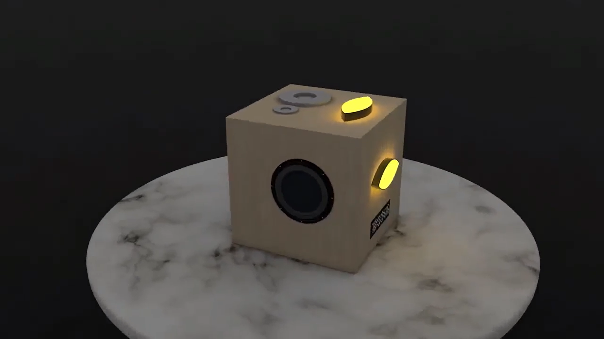
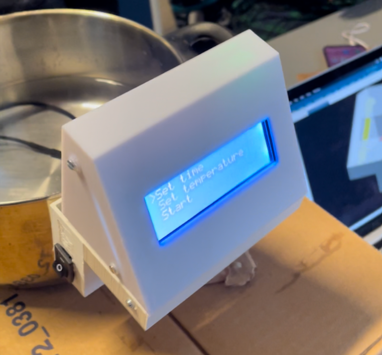

Alarm Clock Project

In order to show an alternative to the
conventional emergency wakeup
methods used currently, our team designed an alarm clock that would gently bring the user from an unconscious
sleeping phase to an awake and selfaware state with no urge to sleep
back. I gained experience in working in
an international team. Being responsible for the mechanical design part of
the project, I gained hands on experience in Siemens NX and 3D printing.
Pasta Cooker Project

In a project, we were aiming to show a
solution to measuring time and temperature in a pot and resolving overflowing in a compact kitchen assistant
tool. Throughout the project, I acquired skills in managing the loss of a
team member and mitigating the issue
of unreliable team dynamics. As a lesson I concluded that in further team
works we have to agree in a set of
rules for cooperation before we start
working together.
Dimensioning Tool Project
In my last semester project, we were
cooperating with Buy2Sell. A very efficient electronic reseller company. We
were given the task to design a weighing and dimensioning tool in order to
save time on measuring these parameters of a box, which will be delivered
by post. Throughout the project I
gained insight to a local start up that
become very successful and how it
tries to optimise its workflow in order
to reach even higher performance.
Budapesti Műszaki és Gazdaságtudományi Egyetem
I have started the 20/21 academic year by studying Mechanical Engineering in German. In the second semester I switched to the Hungarian course since I evaluated the Hungarian teachers to be better. I have learned to work more discipled, document anything I do with great attention and perfection. Last but not least due to the high requirements I was pressured to work harder then ever which showed me that my physical limitation are way bigger than I thought.
Virladee
Virladee was a week-long course concentrating on VR software like Unity and Plant Simulation and supply chain management with Any Logistics. It was a great opportunity to meet people from the University of Tallin since it was a combined educational program. My biggest takeaway was the knowledge I gained in Unity which I am looking forward to use and add to in my current semesterproject.
Milestone Institute
Milestone Institute has a primary focus on helping high school students get admitted to top English and American universities. This is achieved with close and regular mentoring sessions, modular education and societies organised by students. As an output I was accepted to Lancaster University, however, due to personal issues I was not able to live with this great opportunity. I have attended modules named Calculus 1, Modern Physics, Marx Socialism and Communism and more. These gave me an opportunity to get to know my self and choose the best study program for myself. Furthermore, I became part of the Innovation Society where with my friend we won the annual Start-up competition with my idea called Skiassist. One of the awards were tickets to the Startup conference called Startup Safari.
Health Venture Lab

The Health Venture Lab (HVL) program is a incubator for startups in the field of Healthcare and sponsored by G.E. I participated as a student and was representing my school. We learned from other startuper’s failure and success stories, about different focuses of a startups like the team, communication, key milestones, and the science of Pitching. The program was concluded with a fair where participants were able to show their products to Venture Capitalists. The participating teams of students raced with each other in a closed competition. Sadly, not our team has won but I left with lots of valuable experience from which I would like to highlight pitching.
Budapesti Műszaki és Gazdaságtudományi Egyetem
When attending the European Championship organised by the Hungarian Show Dance Association I raced in Duo-Trio Category with my partner and won the second place. Furthermore, in in Adult Formation A Category where we placed first. Sadly, in Sønderborg I have no opportunity to continue my passion therefor, I work out and play football.